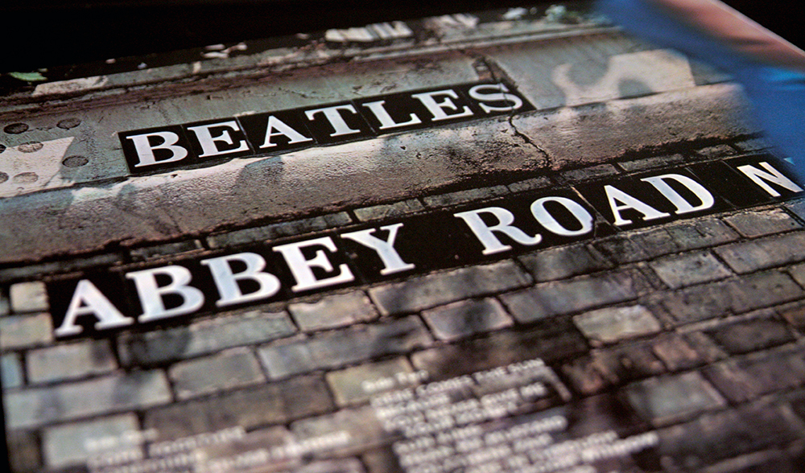
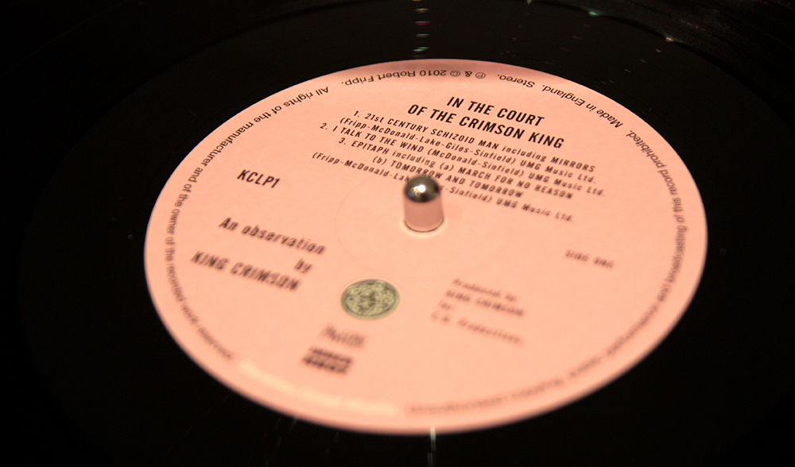

Om butiken
Söders skiv- och prylbörs har sedan 2005 erbjudit vinylskivor och cd-skivor av bra kvalitet till bra pris i Gävle. Butiken låg ursprungligen på Södermalmstorg men har nu flyttat till en större lokal på Norra Kopparslagargatan 18.
I butiken hittar du ett brett sortiment bestående av tusentals olika vinylskivor och cd-skivor i en mängd olika musikstilar. Vi strävar alltid efter att erbjuda bästa möjliga produkt till ett så lågt pris som möjligt. Därför går vi alltid igenom våra inköp av begagnade skivor noga så vi inte säljer något i dåligt skick. I sådana fall är de prissatta därefter.


Köper allt från enstaka skivor till hela samlingar
Letar du efter någon särskild skiva?
Utöver vår markbutik kan vi även skicka skivor, så tveka inte att höra av dig om det är någon särskild skiva du letar efter men inte har möjlighet att besöka butiken.
Har du skivor till salu?
Vi köper allt ifrån enstaka skivor till hela samlingar av LPs, EPs, singlar och CDs. Vi har många års branschvana och har mycket bra koll på vad skivorna är värda. Om du har en väldigt stor samling som du vill sälja kan vi även göra hembesök.
Besök & Kontakta Butiken
Adress
Söders skiv- och prylbörs
Norra kopparslagargatan 18
803 11 Gävle
Öppettider
Tis-Fre: 11.00 - 18.00
Lör: 11.00 - 15.00
Karta över Gävle
Centralt beläget i Gävle nära Staketgatan & Norra Centralgatan.